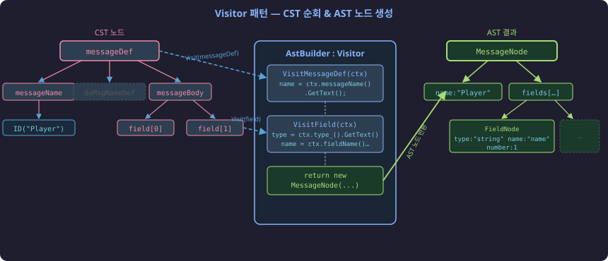
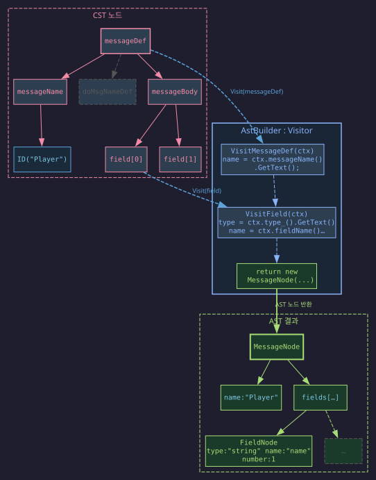

섹션 4 "Visitor 패턴으로 CST 순회하기" 다이어그램을 세 가지 방법으로 렌더링한 결과입니다.

%%{init: {'theme': 'default', 'flowchart': {'curve': 'basis'}}}%%
flowchart LR
subgraph CST["CST 노드"]
A["messageDef"]
B["messageName"]
C["doMsgNameDef"]:::dim
D["messageBody"]
E["ID(Player)"]:::tok
F["field 0"]
G["field 1"]
A --> B
A -.-> C
A --> D
B --> E
D --> F
D --> G
end
subgraph VIS["AstBuilder : Visitor"]
H["VisitMessageDef(ctx)"]
I["VisitField(ctx)"]
J["return new MessageNode"]:::ast
H -.-> I
I -.-> J
end
subgraph OUT["AST 결과"]
K["MessageNode"]:::ast
L["name: Player"]:::leaf
M["fields"]:::leaf
N["FieldNode"]:::leaf
K --> L
K --> M
M --> N
end
A -- "Visit(messageDef)" --> H
F -- "Visit(field)" --> I
J -- "AST 반환" --> K
classDef default fill:#2c3e50,stroke:#f38ba8,color:#f38ba8
classDef tok fill:#1a2a3a,stroke:#5ba3d9,color:#7ec8e3
classDef dim fill:#2c3e50,stroke:#555,color:#555,stroke-dasharray:5 3
classDef ast fill:#1a3a2a,stroke:#a9dc76,color:#a9dc76,stroke-width:2px
classDef leaf fill:#1a3a2a,stroke:#a9dc76,color:#7ec8e3

| 항목 | 수동 SVG | Mermaid | Graphviz (DOT) |
|---|---|---|---|
| 겹침 문제 | 수작업 해결 | 자동 보장 | 자동 보장 |
| 화살표 | 수동 좌표 | 자동 | 자동 spline |
| 스타일링 | 완전 제어 | 제한적 | 색상/폰트/선 모두 가능 |
| 코드 표시 | 자유 | monospace 불가 | 여러 줄 + 폰트 지정 |
| 다크 테마 | 완전 제어 | 제한적 | bgcolor/fillcolor 제어 |
| 빌드 크기 | 0 KB | ~1 MB | 0 KB (빌드 타임) |
| 유지보수 | 좌표 재계산 | 텍스트 수정 | DOT 수정, 자동 재배치 |
| AI 생성 신뢰도 | 좌표 실패 빈번 | syntax 에러 가능 | 선언적 → 신뢰성 높음 |